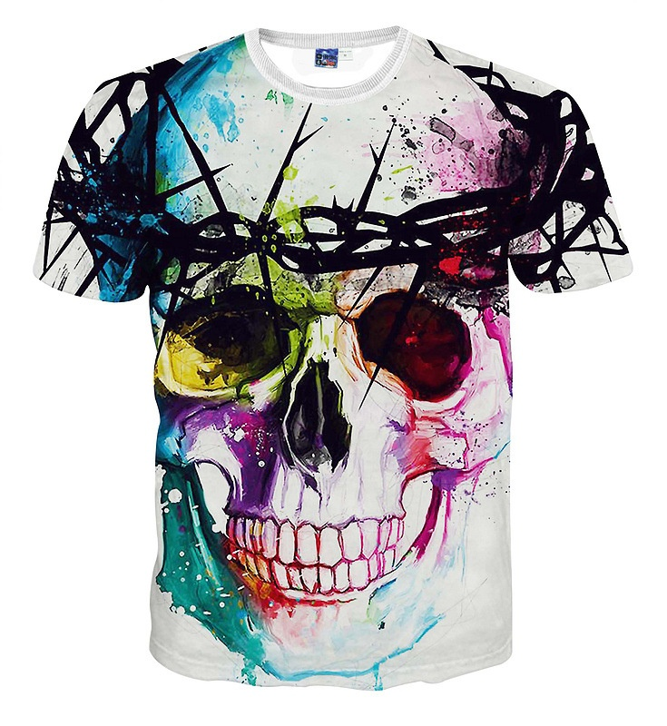
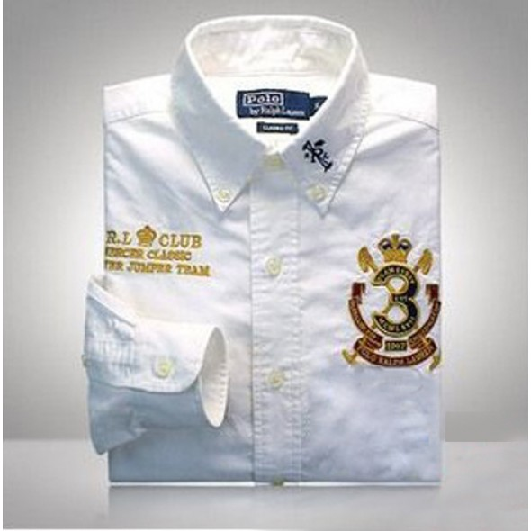
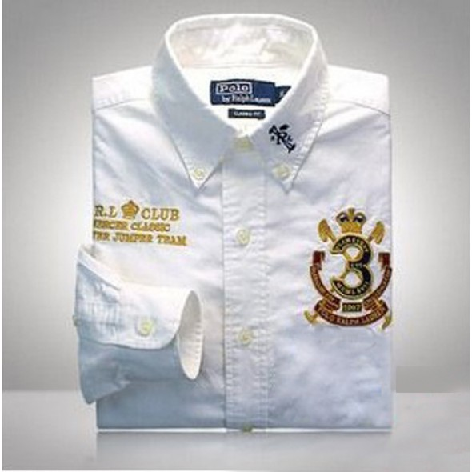

Become a member, one needs to be invited by another member or get waitlisted to get membership. Membership is free. There are a number of eCommerce websites where users have to sign up to be able to buy products at high discounts. Popular examples are overstock.com or ebay.com. However, they don't fulfill the by invitation only criteria and therefore are not classified as private shopping clubs. As the revenues from online sales continued to grow significantly researchers identified different types of online shoppers, Rohm and Swaninathan[4] identified four categories and named them "convenience shoppers, variety seekers, balanced buyers, and store-oriented shoppers". They focused on shopping motivations and found that the variety of products available and the perceived convenience of the buying online experience were significant motivating factors. This was different for offline shoppers, who were more motivated by time saving and recreational motives. The marketing around the digital environment, customer's buying behaviour may not be influenced and controlled by the brand and firm, when they make a buying decision that might concern the interactions with search engine, recommendations, online reviews and other information. With the quickly separate of the digital devices environment, people are more likely to use their mobile phones, computers, tablets and other digital devices to gather information. In other words, the digital environment has a growing effect on consumer's mind and buying behaviour. In an online shopping environment, interactive decision may have an influence on aid customer decision making. Each customer is becoming more interactive, and though online reviews customers can influence other potential buyers' behaviors.

.jpg) 
